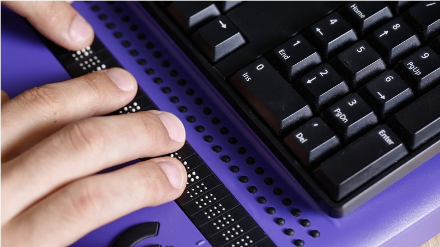

O que é Acessibilidade para Web

A acessibilidade web combina programação, design e tecnologia para construir uma Internet sem barreiras que permita que todos os usuários tenham o entendimento, a aprendizagem, a navegação e uma interação plena com a web. Da mesma forma que a indústria e a arquitetura, por exemplo, concebem objetos, veículos e espaços adaptados às necessidades das pessoas com mobilidade reduzida ou problemas cognitivos, visuais e auditivos, a Internet também deve percorrer esse caminho.